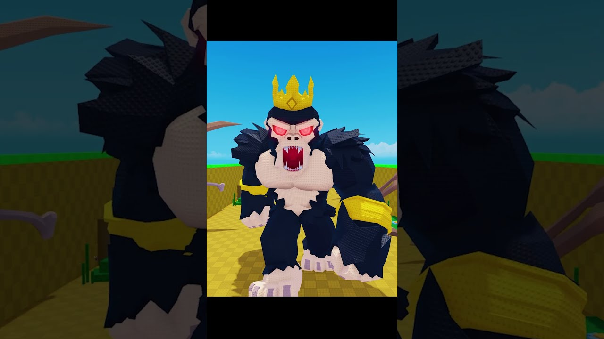

🥚 Zidul secret de ouă vs „regele gorilă”: 1M în 14 ore

LAYZO Roblox are un short de 26 de secunde din Steal An Egg, „massive secret egg wall vs angry gorilla king”, cu ~1,08M vizualizări în 14 ore și ~79K pe oră (citite pe 19 oct).
- 🤫 Formula: un „secret” plus un rival furios („RAGE!!!”) plus ritm rapid.
- ⚠️ CLAIM: „gorilla king” e cum îl numește creatorul în titlu. Nu spunem că e un pet sau un boss oficial din joc.
- 🤔 Din cover și cadre pare că zidul de ouă e momentul-cheie. Hook-ul îl deducem din copertă și cadre, nu din vizionarea clipului.
Ideea VEXU: „ZIDUL DE OUĂ 🥚” pe ecran, apoi „RAGE!!!” când apare hoțul. 20–30 de secunde, doar cu gameplay-ul nostru.
TikTok, de căutat în aplicație: „steal an egg secret egg wall”.
Follow pe TikTok @vexu_online și abonare pe YouTube la VEXU Online. Follow = Au ce bile! 💥